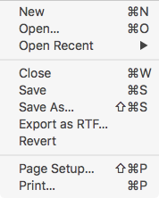

Export Rich Text Files (RTF)
Balthisar Tidy for Work can export Rich Text (RTF) versions of the text in the Tidy HTML editor pane. This is most useful when syntax highlighting is enabled, of course.
This exported file is suitable for use in situations where syntax colored, Tidy-formatted text is desired for non-HTTP applications, such as for code review purposes.
To export an RTF file, simply select the Export as RTF… menu item in the application’s File menu, as demonstrated below.

You will then be presented with a standard Mac OS X file save dialog.